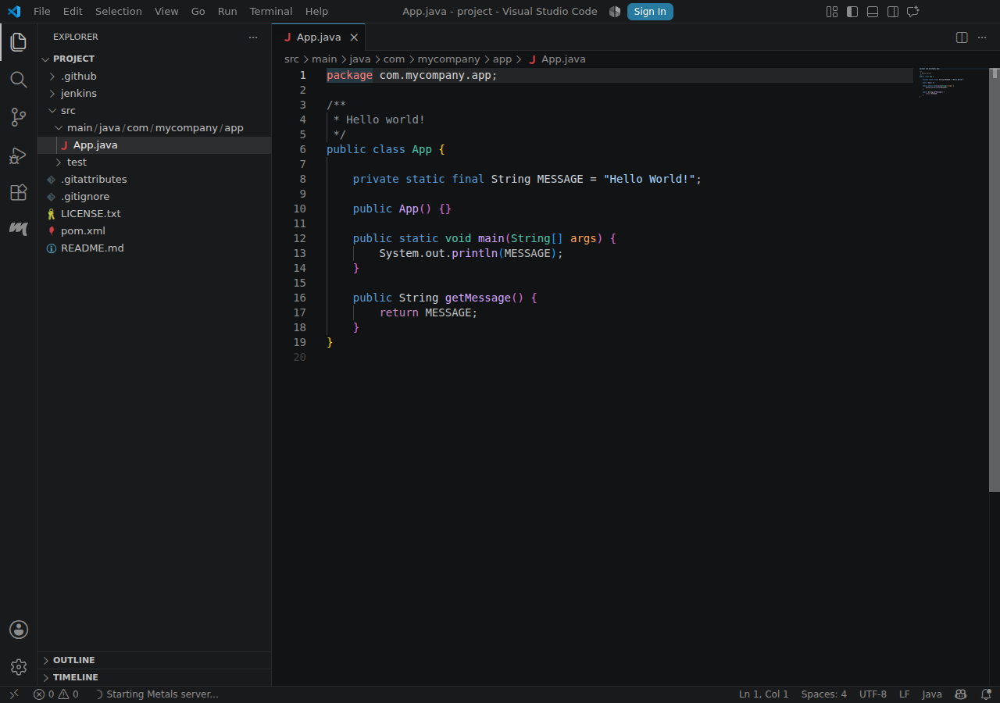
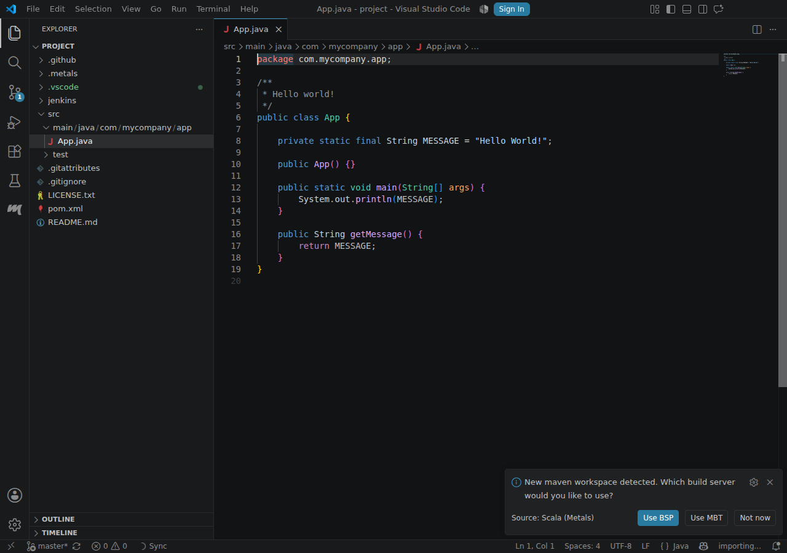
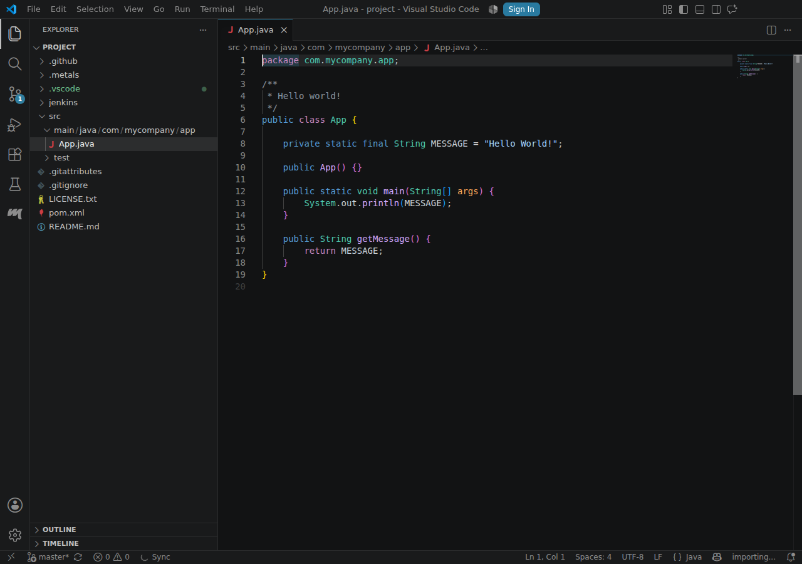
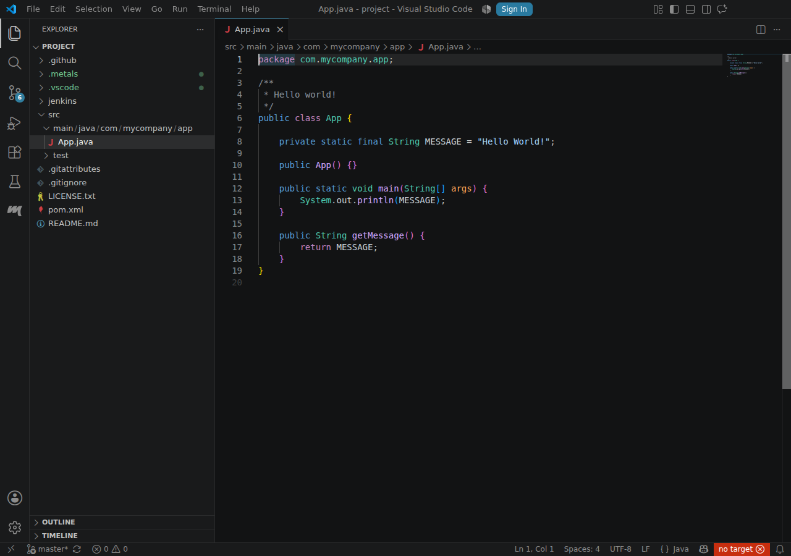

Maven
Simple Java Maven App
jenkins-docs/simple-java-maven-app@master
failedScenarios
-
failed import mbt-import · 42.7 s
MBT import did not create valid JSON at /home/runner/work/metals-community-build/metals-community-build/workspaces/project/.metals/mbt.json. Last JSON error: undefined Metals log tail: 2026.11.16 09:16:45 INFO Started: Metals version 2.0.0-community-build.43837503983 in folders '/home/runner/work/metals-community-build/metals-community-build/workspaces/project' for client Visual Studio Code 1.131.0. 2026.11.16 09:16:45 INFO Memory monitor started 2026.11.16 09:16:45 WARN Using H2 2.5.250 which is newer than the version Flyway has been verified with. The latest verified version of H2 is 2.3.232. 2026.11.16 09:16:46 INFO mbt-v2: indexing 2 files 2026.11.16 09:16:46 INFO time: mbt-v2 loaded index for 2 files in 0.61s 2026.11.16 09:16:47 INFO Running command: /opt/hostedtoolcache/Java_Temurin-Hotspot_jdk/21.0.13-9/x64/bin/java -Dfile.encoding=UTF-8 -Dmaven.multiModuleProjectDirectory=/home/runner/work/metals-community-build/metals-community-build/workspaces/project -Dmaven.home=/tmp/metals1760746084177280922 -cp /tmp/metals1760746084177280922/maven-wrapper.jar org.apache.maven.wrapper.MavenWrapperMain --quiet org.scalameta:metals-maven-plugin:2.0.0-community-build.43837503983:export -DmbtOutputFile=/home/runner/work/metals-community-build/metals-community-build/workspaces/project/.metals/mbt-maven.json 2026.11.16 09:16:48 ERROR Exception in thread "main" java.io.IOException: Server returned HTTP response code: 429 for URL: https://repo.maven.apache.org/maven2/org/apache/maven/apache-maven/3.9.9/apache-maven-3.9.9-bin.zip 2026.11.16 09:16:48 ERROR at java.base/sun.net.www.protocol.http.HttpURLConnection.getInputStream0(HttpURLConnection.java:2034) 2026.11.16 09:16:48 ERROR at java.base/sun.net.www.protocol.http.HttpURLConnection.getInputStream(HttpURLConnection.java:1632) 2026.11.16 09:16:48 ERROR at java.base/sun.net.www.protocol.https.HttpsURLConnectionImpl.getInputStream(HttpsURLConnectionImpl.java:223) 2026.11.16 09:16:48 ERROR at org.apache.maven.wrapper.DefaultDownloader.downloadInternal(DefaultDownloader.java:100) 2026.11.16 09:16:48 ERROR at org.apache.maven.wrapper.DefaultDownloader.download(DefaultDownloader.java:86) 2026.11.16 09:16:48 ERROR at org.apache.maven.wrapper.Installer.createDist(Installer.java:84) 2026.11.16 09:16:48 ERROR at org.apache.maven.wrapper.WrapperExecutor.execute(WrapperExecutor.java:160) 2026.11.16 09:16:48 ERROR at org.apache.maven.wrapper.MavenWrapperMain.main(MavenWrapperMain.java:73) 2026.11.16 09:16:48 INFO time: ran 'maven-export' in 1.28s 2026.11.16 09:16:48 ERROR mbt-import: provider 'maven' failed java.lang.Exception: mbt-maven-export failed with exit code 1 at scala.meta.internal.metals.mbt.importer.MavenMbtImporter.$anonfun$extract$1(MavenMbtImporter.scala:58) at scala.meta.internal.metals.mbt.importer.MavenMbtImporter.$anonfun$extract$1$adapted(MavenMbtImporter.scala:46) at scala.concurrent.impl.Promise$Transformation.run(Promise.scala:503) at java.util.concurrent.ThreadPoolExecutor.runWorker(ThreadPoolExecutor.java:1144) at java.util.concurrent.ThreadPoolExecutor$Worker.run(ThreadPoolExecutor.java:642) at java.lang.Thread.run(Thread.java:1583) 2026.11.16 09:16:48 WARN no build target for: /home/runner/work/metals-community-build/metals-community-build/workspaces/project/src/main/java/com/mycompany/app/App.java
Screenshots (4)

001-file-opened.png 
002-build-server-prompt.png 
003-mbt-selected.png 
004-failure.png -
skipped run-app java-main-run · 0 ms
Screenshots (0)
No screenshots were produced for this scenario.
-
skipped rename-message rename-symbol · 0 ms
Screenshots (0)
No screenshots were produced for this scenario.
-
skipped message-highlight document-highlight · 0 ms
Screenshots (0)
No screenshots were produced for this scenario.
-
skipped test-discovery java-test-discovery · 0 ms
Screenshots (0)
No screenshots were produced for this scenario.
-
skipped debug-app-test java-debug-test · 0 ms
Screenshots (0)
No screenshots were produced for this scenario.


MBT model
No MBT model was uploaded.